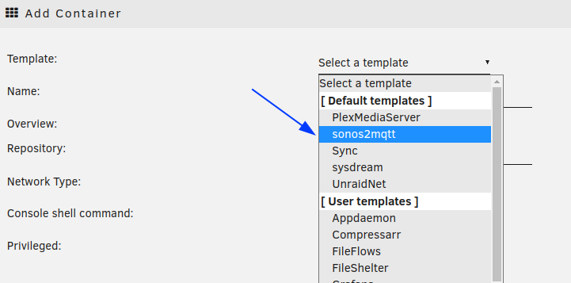

[Howto] Create your own app for UnRaid
Unraid provide an App store via its community app plugin:

With this it becomes really easy for everyone to install any app on Unraid: Just click install and voila your Unraid server is up and running.
What about publishing your own app there ? Wouldn’t it be a great way to let it get adopted by the whole unraid community ?
If you ask me I will tell you: Yes definitely!
Furthermore this is totally free and very easy compared to some other ecosystems.
Let’s have a look about that!
Create your own app store
I created mine here if you are interested in the end results feel free to have a look: https://github.com/sebastienvermeille/unraid-docker-templates
Let’s see how it works:
1) First you have to create a public git repository (on github or whatever) 2) Then inside of it we will declare some templates for our docker applications.
Here is the template I have created for sonos2mqtt app:
sonos2mqtt.xml
<?xml version="1.0"?>
<Container version="2">
<Name>sonos2mqtt</Name>
<Registry>https://hub.docker.com/r/svrooij/</Registry>
<Repository>svrooij/sonos2mqtt</Repository>
<Github>https://github.com/svrooij/sonos2mqtt</Github>
<Network>bridge</Network>
<MyIP/>
<Privileged>false</Privileged>
<Support>https://svrooij.github.io/sonos2mqtt</Support>
<Project/>
<Overview>
Bridge between Sonos and mqtt server
Provide features like notifications or text-to-speech, publish sonos status to mqtt and so on.
</Overview>
<Category>HomeAutomation:</Category>
<WebUI>http://[IP]:[PORT:8080]/status</WebUI>
<TemplateURL/>
<Icon>https://raw.githubusercontent.com/sebastienvermeille/unraid-docker-templates/main/images/mqtt2sonos_icon.png</Icon>
<ExtraParams/>
<PostArgs/>
<DateInstalled>1527397055</DateInstalled>
<DonateText/>
<DonateLink/>
<DonateImg/>
<MinVer/>
<Description>It is very important to set the `Ip of this docker (sonos listener host)` field correctly otherwise the web
ui won't work. (You can run this container without then grab the ip edit and set it)</Description>
<Networking>
<Mode>bridge</Mode>
<Publish>
<Port>
<HostPort>6329</HostPort>
<ContainerPort>6329</ContainerPort>
<Protocol>tcp</Protocol>
</Port>
</Publish>
</Networking>
<Data>
<Volume>
<HostDir>/mnt/user/appdata/sonos2mqtt</HostDir>
<ContainerDir>/data</ContainerDir>
<Mode>rw</Mode>
</Volume>
</Data>
<Environment/>
<Labels/>
<Config Name="Host Port" Target="6329" Default="6329" Mode="tcp" Description="Container Port: 6329" Type="Port" Display="always"
Required="true" Mask="false">6329</Config>
<Config Name="IP of one known sonos speaker" Target="SONOS2MQTT_DEVICE" Default=""
Description="(device discovery doesnt always work inside docker)" Type="Variable" Display="always" Required="true"
Mask="false"></Config>
<Config Name="Mqtt connection string" Target="SONOS2MQTT_MQTT" Default=""
Description="mqtt(s)://[user]:[password]@[host]:[port]" Type="Variable" Display="always" Required="true"
Mask="false"></Config>
<Config Name="Publish distinct (optional)" Target="SONOS2MQTT_DISTINCT" Default="true"
Description="Publish distinct or not" Type="Variable" Display="advanced" Required="false"
Mask="false">true</Config>
<Config Name="Ip of this docker (sonos listener host)" Target="SONOS_LISTENER_HOST" Default=""
Description="" Type="Variable" Display="always" Required="true"
Mask="false"></Config>
<Config Name="AppData Config Path" Target="/config" Default="/mnt/user/appdata/sonos2mqtt" Mode="rw"
Description="Container Path: /config"
Type="Path" Display="advanced-hide" Required="true" Mask="false">/mnt/user/appdata/sonos2mqtt</Config>
<Config Name="Text to speech endpoint url (optional)" Target="SONOS_TTS_ENDPOINT" Default=""
Description="" Type="Variable" Display="always" Required="false"
Mask="false"></Config>
<Config Name="Text to speech language (optional)" Target="SONOS_TTS_LANG" Default="en-US"
Description="" Type="Variable" Display="always" Required="false"
Mask="false"></Config>
</Container>
As you can see it’s just a simple xml file declaring a bit ports, environment variables, paths and so on.
You can define here multiple type of configurations:
- Variable: ENV variable name
- Port: A port mapping
- Path: A path exposed
For more details you can read this page of unraid’s wiki it’s very good documented.
3) Then we have to tell unraid to fetch our templates
To do so you simply go to your unraid instance and select the Docker tab.

Then on the bottom of the page add the url of the git repository you have created at step 1):

And click SAVE.
4) Now you can create a docker container with your template:
Click on  and then select your own template:
and then select your own template:

And then all the configuration you defined in the xml file will be rendered as follow:

As you can see we can define custom values, optional values, masked values for password etc. it is really powerful thank’s Unraid Devs!
Integrate your docker template repository with the community apps plugin
TODO
References
Author：svermeille for CookieCode
（CC BY-NC-SA 4.0 license）
titleÔºö„Ää [Howto] Create your own app for UnRaid 》
permalink：https://cookiecode.dev/unraid/unraid-create-custom-docker-template.html

Developer Advocate, enthusiast attracted by Clean Code concepts and keeping code enjoyable to work with :)